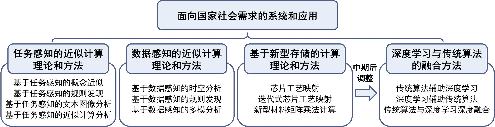

![]()
主要研究内容
本项目开展面向大数据的近似计算理论与方法的研究，包括任务感知的近似计算理论和方法、数据感知的近似计算理论和方法、基于新型存储的计算理论和方法、深度学习与传统算法的深度融合方法以及面向国家社会需求的系统和应用。主要的研究内容及其关系如下图所示：

1. 任务感知的近似计算理论和方法
任务感知的近似计算理论与方法充分考虑利用任务本身的特征，将任务特征与算法设计结合。是通过深度挖掘实例与任务关联，设计满足任务要求的一类大数据近似计算方法。与传统的算法设计相比，不再纯粹追求理论结果与复杂度，而是挖掘发现与计算紧密相关的具体任务特征，强调满足实际需要，达到大数据分析处理问题上的应用效果。
任务感知计算具有十分重要的意义和巨大的实际应用价值。一方面，单纯追求理论上的完备或者较低的复杂度未必能开展真正的应用，从而失去在实际中应用的价值。另一方面，算法设计时充分利用任务特征不仅可以提升效率，同时还能提升算法的查询准确性。为了实现任务感知计算的构想，首先要深度挖掘发现任务特征，建立任务感知的计算理论及模型，并重点研究相关的查询近似算法和数据近似算法，主要包括：研究大数据环境下任务特征的发现与挖掘、任务特征的表示与建模，建立任务感知的近似计算理论及模型；研究面向任务感知的高效算法的设计，包括任务感知的查询近似算法和数据近似算法的设计与评价标准；推广这些技术在大数据中的实际应用。
在基于任务感知的概念近似方面，项目提出了多项式可解的时态图模体、弹性聚合最近邻查询及面向电子商务的无监督场景挖掘等概念及计算方法。在基于任务感知的规则发现方面，项目提出了近似字典次序依赖发现、近似拒绝约束发现及近似包含依赖发现等方法。在基于任务感知的文本图像分析方面，项目提出了机器翻译注意力交互学习、高分辨率全景图生成、大语言模型推理增强及基于知识增强的情感分析等方法，并系统地分析了各类基于大模型的自然语言生成质量评估方法。在基于任务感知的近似计算分析方面，项目系统地分析了各类误差有界轨迹数据压缩方法，并围绕《Science》中De Montjoye和Sánchez D等人关于匿名化机制个体身份再识别方面的争论，首次对现有匿名轨迹方法的个体隐私性和实际可用性进行了系统性的评估和分析，回答了由此争论引出的两个关键问题。
2. 数据感知的近似计算理论和方法
除问题本身特性外，数据、实例是影响问题难易程度的另一重要因素。在算法设计过程中结合数据特性，针对不同类型问题实例开发相应算法，可能获得更优的计算效果。考虑到大数据信息可用性普遍偏低，将数据特征与算法设计结合的数据感知算法是提高大数据算法可靠性的一个潜在选择。
为实现数据感知计算，需深度挖掘发现数据特征，建立数据感知计算理念和模型，并重点研究扩展数据感知的近似算法理论及应用，主要包括：研究大数据环境下数据特征和基于压缩感知等的变换域特征的发现与挖掘，建立数据感知计算理论，构建与数据量、数据统计相关的算法有效性度量标准；研究数据感知的近似计算理论和模型；研究数据感知算法的设计方法，扩展数据感知的查询近似以及数据感知的数据近似，并研究面向大数据计算的应用。
在基于数据感知的时空分析方面，项目提出了时态凸块搜索、上下文融合的原始定位数据标注、基于时空行为的用户决策画像、多维度联合学习的定位点标注及学者姓名协同消歧等方法。在基于数据感知的规则发现方面，项目提出了拒绝约束冲突多样化修复、字典序依赖发现、引导式条件函数依赖发现、差分依赖发现、逐层次序依赖发现、逐点次序依赖发现、动态函数依赖发现及增量拒绝约束发现等方法。在基于数据感知的多模分析方面，项目提出了基于轨迹的图像描述生成、基于文本和轨迹约束的图像生成、视觉-语言模型注视对齐等方法。
3. 基于新型存储的计算理论和方法
近年来国际存储器巨头对新型存储器体现出了巨大的热情，纷纷加大研发投入。新型非易失存储器件得到相当的发展，并逐步走向成熟。如基于在多个重要技术节点上取得的突破和技术的全面性，英特尔和美光于2015年率先量产容量为128Gb的相变存储器3DXPoint。这些新型存储器件有助于缓解计算和存储的瓶颈，尤其是在其作为存储的主要功能之外，也可以用来进行计算。但是如何利用这些新型存储器件进行高效计算，这些新型存储器件能够支持什么样的算法处于研究的起始阶段，大部分研究工作将其作为高效的存储。
基于现有3DXPoint的结构或者对其结构做适量改动，从计算的角度研究新型非易失存储器件的表达能力，从而从理论上搞清楚新型非易失存储器件解决计算问题的能力。其次，研究分析传统计算问题的算法如何转换为在新型非易失存储器件计算的设计方法及其普适性，并进一步分析基于新型非易失存储器件的算法在解决现实问题上的实用性。
在芯片工艺映射方面，项目提出了基于时延预测的芯片工艺映射方法和基于时延优化的迭代芯片工艺映射方法。在新型存储材料矩阵运算计算方面，项目提出了基于ReRAM Crossbar的整数矩阵乘法加速器架构。
4. 深度学习与传统算法的融合方法
近年来广受关注的深度学习本质上也是一种近似计算方法，但是从上个世纪70年代以来的经典算法和从上个世纪40年代以来深度学习是相对独立的两个研究领域，缺少交集。近年一些研究者提出将深度学习与传统方法相结合，依据结合的角度不同，深度学习与传统算法的融合方法可以分为传统算法辅助深度学习的方法、深度学习辅助传统算法的方法和传统算法与深度学习深度融合的方法。
在传统算法辅助深度学习方面，项目提出了基于词图的无监督双语词典推断、基于核方法的深度网络嵌入、基于检索和重写的无监督翻译模型初始化、基于对比学习的去噪感知半监督异常检测及基于深度强化学习的许可区块链自动调优等方法。在深度学习辅助传统算法方面，项目提出了基于自编码器与度量学习辅助谱聚类的聚类簇数量估计、基于图神经网络辅助A*搜索的近似图编辑距离计算及基于图神经网络辅助协同过滤的个性化推荐等方法。在传统算法与深度学习深度融合方面，项目提出了K近邻和自编码器深度融合的无监督异常检测方法。
5. 面向国家社会需求的系统和应用
将实现任务感知及数据感知的新型算法并推广到实际应用中。面向国家社会需求，推广到相关应用中，检验并改善所提出的理论与方法，并且结合控制系统的反馈理念，形成闭环，追踪用户对这些应用的反馈信息以不断改进和完善相关理论和方法。
项目结合了任务感知和数据感知的计算理论和方法以及深度学习与传统算法的融合方法等研究成果，在国防安全、国民经济和智能制造等领域推广应用。